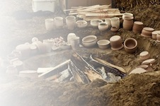
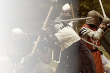
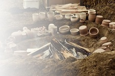
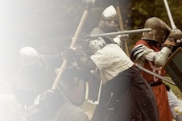

The Canton of EoforwiC Presents...
The ICELANDIC aLTHING
- September 17, 2011
- 3421 Concession Road #5
- Orono, ON L0B 1M0
Troll opens at 9am on Saturday.
The year is 1011, and from all quarters the people of Iceland are gathering to have disputes heard in the law courts and to heed the wisdom of the Lawspeaker. Artisans will sell their wares, warriors will train with sword, axe, and bow, and chieftains will extend their hospitality to their people. This is a theme event where we will be attempting to recreate a specific culture, place, and time--in this case, early 11th century Iceland. Those attending the event are encouraged to dress in Norse or contemporary clothing, and to choose and use a Norse name for the day (if you do not already have your own). Our event was inspired by the first Icelandic Althing event presented by Eoforwic in 1992. Since that time, Norse culture has grown and spread throughout Ealdormere, and many new resources have become available to help attendees prepare for the event. You will find links to many of these below.
Link to the Facebook page for this event
WELCOME, visitor, to the alþINGI!
You may be familiar with your own little Things1, but this is the largest Thing in the world2, and things of great importance are done here3. Pay heed to the Lawspeaker and the words of the law4!
The Hávamál5 bids us welcome guests with hospitality:
A guest has needs, gift of water, fine towels and friendliness.
A cheerful word, a chance to speak, kindness and concern.
So come you, be refreshed, take your comfort, and learn of our ways.
So, too, the bishops6 bid us be neighbourly. As they would gather their flocks, so the 39 Goðar7 gather the people of the goðorð8 of which they are chieftain. All must be gathered by the appointed time; each householder bringing their part of the shelter to where their Goði's booth will be set up, that they may be known to be there9, and may be given their allotment and their place to rest in the shared shelter.
We are gathered from the four quarters of Iceland - North, South, East, West - at the Þingvellir10, where the waters of the Öxarárfoss cascade into Þingvallavatn11, as free folk have gathered for 79 years12. Here is the law rock13, where all should attend14, and where all who have cause may speak. Here may oaths be sworn before all, here covenants made, and here may cases that could not be settled in one of the thirteen district courts be brought to their rightful quarter court at the Thing15. Once the procession to the law rock - the Lawspeaker, the Goðar, and judges - is complete, then the Thing is called to order, and then the people of the four quarters go to the appointed places for their quarter courts.
If a case is to be heard in the quarter court, and rightful summons have been issued at the law rock, then the judges are gathered16, witnesses are heard17, and judgement is made18.
But be not hasty to bring suit; know the rights of your case. A just killing is not murder, but your repute is not that of a man who would attack from ambush or strike an unarmed man, so you are no murderer19. But mind your tongue, for the law tells us if "a man calls a man ragr or stroðinn or sorðinn... they shall be punished as fully slanderous words, and a man is given the right to kill for these words." So too, the giving of a by-name that brings a man into disrepute is cause for greater outlawry20 and exile for life, as is pushing a man to the ground, or pushing his hat forward over his face21.
Punishment by lesser outlawry is for lesser crimes. But who would want to be exiled from home, and hearth, from kith and kin, from Iceland, for even three years? And even the most affluent would not want their property forfeit for crimes of theft or foreswearing a bond... or perhaps the more affluent might even mind it more. So mind yourself, but fear not for your goods or your wealth, for the law is for all.
Think always as you conduct yourself at the Thing, how you will be remembered, and how you would want to be remembered. For as the Hávamál tells us:
Cattle die, kinsmen die, all men are mortal.
Words of praise, will never perish, nor a noble name.
Many great tales are told of heroic deeds, of wisdom and wise council, of prowess and cleverness. Theirs are the names that will be remembered and praised by all. Tales are told, too, of dark deeds, of faithlessness, of cowardice, of weakness, and of crime. These too are names that will not be forgotten, but will ever be cursed. Let your children be proud of your name, let their children be raised with tales of your greatness, and let your children's, children's children use your deeds as an example to all.
But do not think that all at the Thing is trial and judgement, for here too are gathered the young folk of the land - and many arrangements that are not matters of law will be made - and here is where all may show their worth for all to see. Here are news and stories shared, here craftsmen show their wares, and here visitors come, to learn and to share tales and to trade.
And perhaps when you return whence you came, you will share our tales with others, and speak well of our ways, and of the doings here.
So, welcome visitor, to the greatest Thing in the world!
SITE FEES:
- Site fee Adults $15.00 (includes Kingdom Event Tithe)
- + $5 Non-member surcharge where applicable
- Children under 12 $10
- Children under five are free
FEAST FEES:
- Lunch - $5 by Lord Gunnar
- Light dinner - $7, Beef or Vegetable Stew and Bread by Lord Hans
Make Cheques payable to:
SCA Inc. - Canton of Eoforwic
Reservations
- The Honourable Lady Medb ingen Dungaile
- Jackie Wyatt
- 1211-360 Ridelle Ave, Toronto, ON, M6B 1K1
- (416)481-4868
- jkwyatt@alumni.uwo.ca
Event Stewards
- Lord Gunther Wahlstadt of Bremen & Magistra Nicolaa de Bracton
- David Clark and Susan Carroll-Clark
- 2 Black Dr, Ajax, ON, L1S 7R5
- (905)427-4943
- marginalia@rogers.com
CAMPING
Camping is available starting the evening of September 16 through Sunday morning, September 18 at no additional charge. Arrangements can be made to drop off tents and equipment in advance; please contact the autocrats for more information. Please note that the site is primitive. Site is privately owned and wet; no liquor sales onsite.
ACTIVITIES
Armoured Combat: A variety of tournament will be held, many with a Norse theme. These will include: a Boat Battle (Bridge Battle variant) a Whale Carcass Battle and a Sword & Shield only Holmgang Bear Pit Tournament. Marshal in Charge: Lord Thorolfr
Archery: Novelty shoots and a Royal Round or IKAC (depending on time and demand). Marshal in Charge: Magistra Nicolaa
Thrown Weapons: General Thrown Weapons and novelty throws at various targets. Marshal in Charge: THL Grom Meinfreiter
Arts and Sciences classes: TBA. Contact THL Lucrece de Montsoreau
Law Cases: There will be an opportunity for anyone to present a law case before our Lawspeaker . Juries will be selected to decide the cases later in the day. Come accuse your neighbour for fun and profit, but beware the consequences of law! One large law case is already planned, which could result in monetary fines, exile, or even bloodshed…
DARC (DARK AGES RECREATION COMPANY)
Merchants row.
REGIA ANGLORUM
Period Cooking with free samples!
Pole lathe.
Fabric dyeing and wool combing.
MERCHANTS
Merchants are welcome; contact the autocrats for details. Merchants should bring their own tables, chairs, and any tentage/shelter they require.
DireCtions to Site:
From the 401 (east of Toronto) take exit 436 for Hwy 35/115 North towards Peterborough. Exit at Concession #4 West (right turn). You will make a right turn and then loop under Hwy 35/115. Turn left onto Concession #4 West. Turn right at Squair Rd. At Concession Rd. #5, turn right. The first driveway on your right is the site.
From the Peterborough area, take Hwy 115 south to Concession #4 West and turn right. Turn right at Squair Rd. At Concession Rd. #5, turn right. The first driveway on your right is the site.
  
 